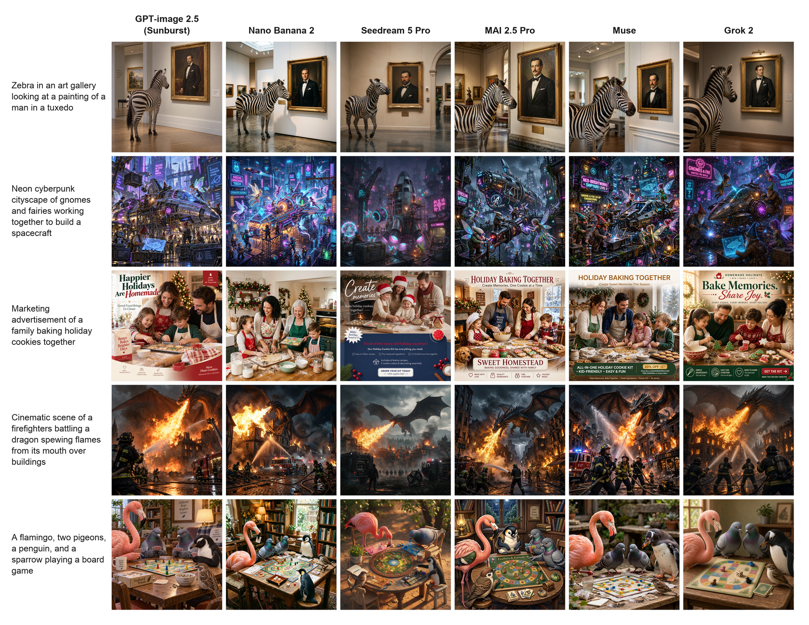
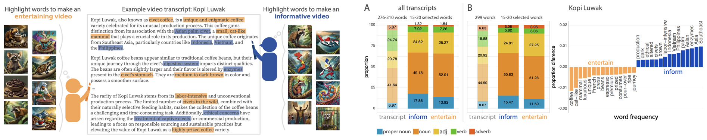
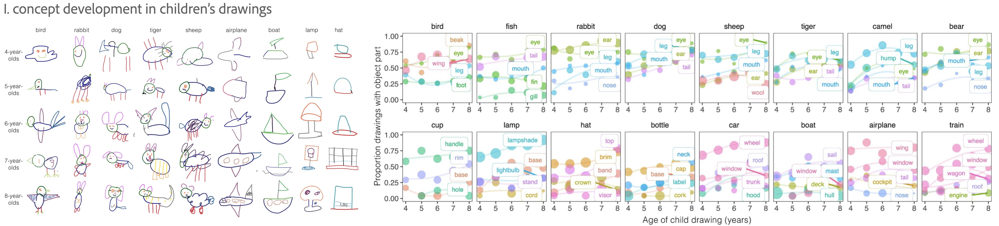
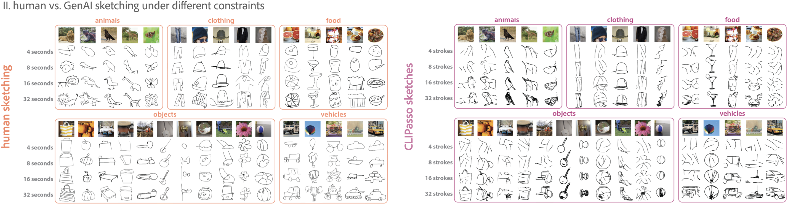

what I do
I am the Technical Lead for Adobe Firefly Image & Vector Eval for 1P & 3P models. I build human eval tools & auto evaluators for model quality assessments that are benchmarked on specialized, large-scale eval sets. To curate these sets, I hire globally and culturally diverse teams of professional photographers & editors, graphic designers, and video creators & editors to custom create, curate, and & annotate assets. My research statistically measures improvements & regressions in model behavior related to: text-to-visual & visual-to-visual systems, usability, and editability
what my impact is
My evaluations determine whether 1P models are ready for public release and guide leadership decisions for buying 3P models & weights. To do this, I develop production-readiness standards based on large-scale user research and co-create PRDs with product managers for model quality. I also collaborate with companies like Google & OpenAI to evaluate their pre-release models before Day 0 launches. My work is also deeply integrated with AI Safety and IP Guardrails teams to ensure that models do not create or enable the creation of harmful content.
who I am
I have been passionate about visual media throughout my entire life, truly. I grew up on Whidbey Island, WA (a very rural island), and I spent my teen years sketching and hiding away in art studios. I did 2 art apprenticeships and then double majored in Philosophy and History of Mathematics & Sciences from St. John's College, where I was fascinated by how novel visualizations have catalyzed & been used to communicate humanity's major scientific discoveries to the global public (e.g., Cartesian coordinate system, periodic table, Vitruvian man) — yet, despite this critical role of visual media in human innovation, relatively little is known about how people communicate in visual form. This question continues to inspire me, academically, professionally, and personally.
I earned my PhD in Experimental Psychology in the Cognitive Tools Lab at UC San Diego, studying human and model generative behaviors. My dissertation research evaluated how user goals shift visualization strategies and downstream interpretation by others. I studied this by generating & analyzing large-scale datasets of drawings, diagrams, and data visualizations. In other words, I studied how people make pictures. Today, I study how GenAI models make pictures.
Selected GenAI research highlights
At Adobe, I evaluate text-to-image, image-to-image editing, vectorization and image-to-video editing via instructional prompting, masking, layer segmentation, and more. This work spans both multi-modal foundational and specialist models. By measuring SOTA model behavior via human & auto evals, I can help executive leadership and product managers understand where the market is today and define the market of tomorrow. I also work closely with model engineers to help direct model development and ensure alignment of real user use cases.


My research supports the development of culturally-specific GenAI models. I hire and closely work with global teams of artists with extensive lived experience from specific cultures and countries. This human-in-the-loop collaboration ensures that our models do not contribute to erasure or inappropriate Westernization of non-Western cultures. My work has contributed to text-to-image models built in the Adobe x HUMAIN global strategic partnership to build GenAI Arabic models.


Occasionally, I also conduct mixed-methods qualitative user research when data access or interpretation is limited. I strongly believe that user research keeps GenAI research honest and grounded. I have interviewed filmmakers, video editors, and musicians to develop GenAI video editing parameters based on users' creative workflows. These insights helped frame large-scale annotation experiments that eventually fine-tuned different model parameters. For example, our Creativity & Cognition 2024 paper evaluated how people (N >800) and LLM models select B-Roll to enrich videos depending on their goals to make entertaining or informative content.


During my PhD, I specialized in large-scale human eval methods. Back then in 2019-2024, large-scale crowdsourcing techniques for human eval were novel — this is now the bread & butter (or more strongly, the backbone) of GenAI model evals & post-training that everyone conducts, but I am proud to have been among the first to develop these tools during grad school and take this early expertise into my current professional research career. In my dissertation work, I used these human eval methods to curate large-scale datasets of sketches and human annotations. Datasets like these can be used for a wide array of research domains such as computer vision, attention, memory, semantic segmentation of objects, and information prioritization based on user goals. See my Publications below to access those datasets, such as our Nature Communications 2024 paper on evaluating concept development in children through their drawings.




-
journal articles
- *Yang, J., *Huey, H., Lu, X., and Fan, J.E. (submitted). Visual communication of object concepts at different levels of abstraction.
- Mukherjee, K., Huey, H., Stoinski, L.M., Hebart, M.N., Fan, J.E., and Bainbridge, W.A. (2025). Drawings of THINGS: A large-scale drawing dataset of 1,854 object concepts. Behavior Research Methods.
- Brockbank, E., Verma, A., Lloyd, H., Huey, H., Padilla, L., and Fan, J.E. (2025). Evaluating convergence between two data visualization literacy assessments. Cognitive Research: Principles and Implications.
- Huey, H., Leake, M., Aneja, D., Fisher, M., and Fan, J.E. (2024). How do video content creation goals impact which concepts people prioritize for generating B-roll imagery? Creativity and Cognition. Chicago, Illinois: Association for Computing Machinery
- Long, B., Fan, J.E., Huey, H., Chai, R., & Frank, M. C. (2024). Parallel developmental changes in children's production and recognition of line drawings of visual concepts. Nature Communications.
- Huey, H., Lu, X., Walker, C.M., & Fan, J.E. (2023). Explanatory drawings prioritize functional properties at the expense of visual fidelity. Cognition.
- *Huey, H., *Jordan, M., & Dillon,. M.R. (2023). Shortest path problems on different geometric surfaces: Reasoning about linearity through development. Developmental Psychology.
- Aboody, R., Huey, H., & Jara-Ettinger, J. (2022). Preschoolers decide who is knowledgeable, who to inform, and who to trust via a causal understanding of how knowledge relates to action. Cognition.
- Jara-Ettinger, J., Floyd, S., Huey, H., Tenenbaum, J.B., & Schulz, L. (2019). Social pragmatics: Four and five-year-olds rely on commonsense psychology to resolve referential ambiguities. Child Development.
-
peer-reviewed conference proceedings & posters
- *Mukherjee, K., *Huey, H., *Lu, X., Vinker, Y., Aguina-Kang, R., and Fan, J.E. (2023). SEVA: Leveraging sketches to evaluate alignment between human and machine visual abstraction. Advances in Neural Information Processing Systems, Datasets and Benchmarks Track. New Orleans, Louisiana: NeurIPS
- *Huey, H., *Oey, L.A., Lloyd, H.S., and Fan, J.E. (2023). How do communicative goals guide which data visualizations people think are effective? Proceedings of the 45th Annual Conference of the Cognitive Science Society. Sydney, Australia: Cognitive Science Society.
- *Mukherjee, K., *Huey, H., *Lu, X., Vinker, Y., Aguina-Kang, R., and Fan, J.E. (2023). Evaluating machine comprehension of sketch meaning at different levels of abstraction. Proceedings of the 45th Annual Conference of the Cognitive Science Society. Sydney, Australia: Cognitive Science Society.
- Lloyd, H.S., Huey, H., Brockbank, E., Padilla, L., and Fan, J.E. (2023). What is graph comprehension and how do you measure it? Proceedings of the 45th Annual Conference of the Cognitive Science Society. Sydney, Australia: Cognitive Science Society.
- *Huey, H., *Long, B., Yang, J., George, K., and Fan, J.E. (2022). Developmental changes in the semantic part structure of drawn objects. Proceedings of the 44th Annual Conference of the Cognitive Science Society. Toronto, Canada: Cognitive Science Society.
- Nagabandi, M., Yang, J., Huey, H., Fan, J.E. (2022). Decomposing objects into parts from vision and language. Proceedings of the 44th Annual Conference of the Cognitive Science Society. Toronto, Canada: Cognitive Science Society.
- Huey, H., Walker, C.M., & Fan, J.E. (2021). How do the semantic properties of visual explanations guide causal inference? Proceedings of the 43rd Annual Conference of the Cognitive Science Society. (Virtual Meeting) Vienna, Austria: Cognitive Science Society.
- Huey, H., Loncar, N., Jordan, M., & Dillon, M.R. (2019). A tale of paths between two points: Children's identification of linearity on different geometric surfaces. Poster presented at the Biennial Meeting of the Society for Research in Child Development 2019.
- Loncar, N., Huey, H., & Dillon, M.R. (2019). Infants fail to categorize forms by kinds. Poster presented at the Biennial Meeting of the Society for Research in Child Development 2019.
- Aboody, R., Huey, H., & Jara-Ettinger, J. (2018). Success does not imply knowledge: Preschoolers believe that accurate predictions reveal prior knowledge, but accurate observations do not. Proceedings of the 40th Annual Conference of the Cognitive Science Society.
- Aboody, R., Huey, H., & Jara-Ettinger, J. (2017). Success does not imply knowledge: Preschoolers believe that accurate predictions reveal prior knowledge, but accurate observations do not. Poster presented at the Cognitive Development Society's Bi-Annual Meeting 2017.
-
workshop presentations
- Mukherjee, K., Huey, H., Rogers, T., & Fan. J.E. (2022). From Images to Symbols: Drawing as a Window into the Mind. Proceedings of the 44th Annual Conference of the Cognitive Science Society. Toronto, Canada: Cognitive Science Society. Co-organizer of workshop & co-designer of website.
- Pitt, B., Huey, H., Jordan, M., Hart, Y., Dillon, M.R., Bottini, R., Carstensen, A., Boni, I., Piantadosi, S., Gibson, E., Marghetis, T., Holmes, K.J., Star-Lack, M., & Chacon, S., (2022). Dimensions of Diversity in Spatial Cognition: Culture, Context, Age, and Ability. Proceedings of the 44th Annual Conference of the Cognitive Science Society. Toronto, Canada: Cognitive Science Society. Invited speaker.